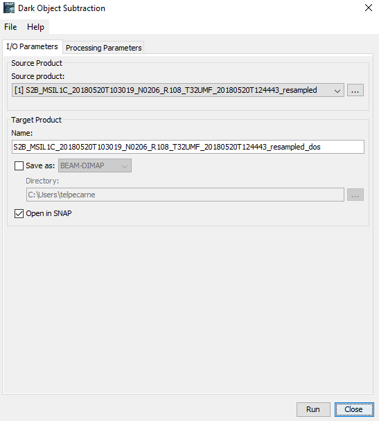
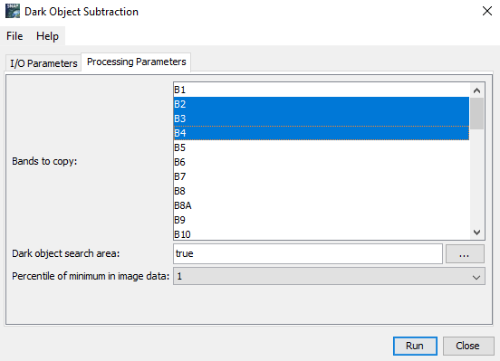

| Dark Object Subtraction |
|

Used to select the Dark Object Subtraction correction. Use the ... buttons to open a data product currently not opened in the Sentinel Toolbox.
The following source products are supported for Dark Object Subtraction:
Name: Used to specify the name of the target product.
Save to: Used to specify whether the target product should be saved to the file system. The combo box presents a list of file formats.
Open in SNAP: Used to specify whether the target product should be opened in the Sentinel Toolbox. When the target product is not saved, it is opened in the Sentinel Toolbox automatically.

Source bands:
Bands to be included in the target product. DOS will be applied on spectral bands only, other selected bands will be
copied
to the target product as they are.
Dark object search area:
Mask expression, which specifies the area of the source product, which will be used to calculate the value of dark object correction.
Percentile of minimum in image data:
A bottom reflectance percentile which will be considered as a dark object.
The Dark Object Subtraction processor creates a target product which contains only the bands selected by the user. The spectral wavelength bands are computed by the operator while the other bands are just copied from the source.